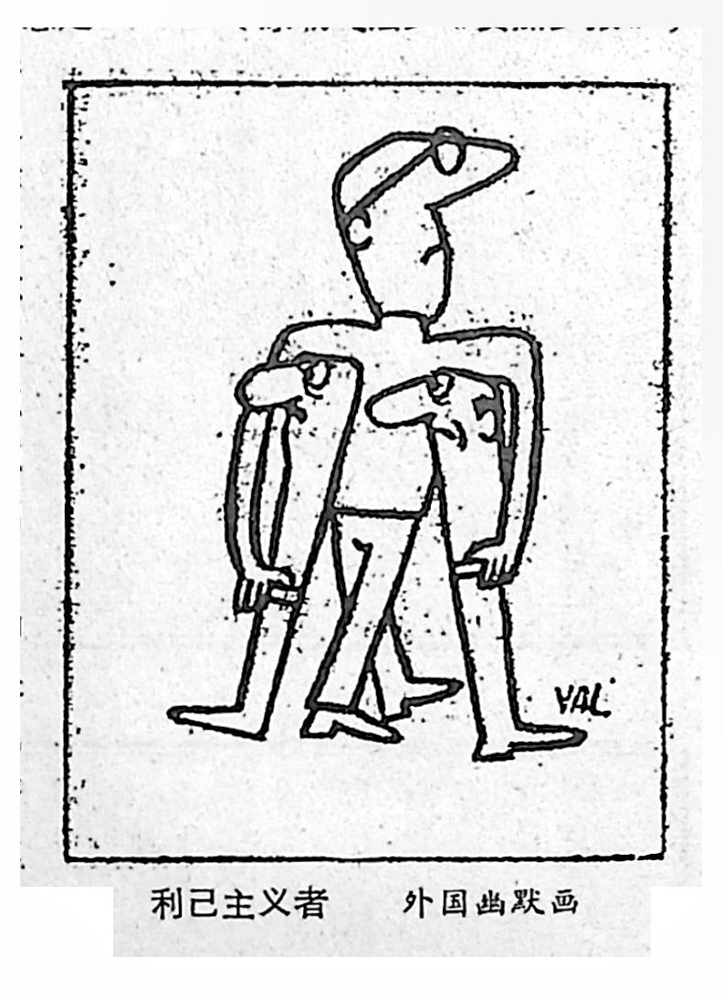

佚名 《人事》1987年第11期（总第26期），第40页（原载：外国幽默画）
利己主义者
The Egoists
- Description
- Three lanky figures are knotted together in one frame — a tall man in a cap and two smaller men at his sides — arms and legs interlocked, each striding off in a different direction.
- Note
- Signed “VAL”; printed as a foreign humorous drawing with no source.
- Artist
- Unattributed 佚名
- Reprinted from
- 外国幽默画 — a foreign cartoon (labeled 外国幽默, “foreign humor”; original source not named)
- Published in
- 《人事》1987年第11期（总第26期）, p. 40
- Themes
- Foreign cartoons

Cite
Unattributed, “利己主义者” [The Egoists], Renshi (Personnel) 《人事》, 1987, no. 11, p. 40.